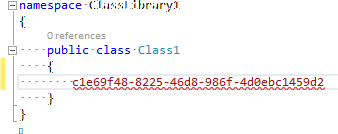
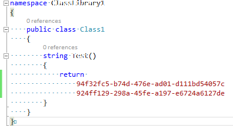

Luminous Essentials - Insert Guid
Download this extension from the VS Gallery or get the CI build.
The easiest and simplest way of inserting a new GUID into your code.
If you like this extension, please come back and add add a *Review (either with or without text), so people will know what users think of it.*
If for some reason you didn't like it, or have any suggestions for improving it, just let me know via the *Q AND A section.*
See the changelog for changes and the roadmap for the future.
Features
- Insert Guid
- Insert Multiple Guids
Insert Guid
To insert a guid without this extension, you would have to:
- move the mouse up to the Tools menu
- click the menu name to get the Tools menu to open
- select Create Guid from the Tools menu
- click the Copy button
- click the Exit button
To insert a guid using this extension:
- simply right-click where you want to insert the guid
- or select some text that you want to replace with a guid and right-click that selected text
- select Insert Guid from the context menu
A new guid has been inserted into your code for you, right where you right-clicked.


A guid can be inserted into any code statement, or in any attribute declaration, or pretty much anywhere you need a guid.
Insert Multiple Guids
To insert multiple guids at a time:
- use Alt-Up or Alt-Down to make a muli-selection
- right-click the selected code (or blank lines)
- select Insert Guid from the context menu
A new guid for each line of the multiple selection has been inserted into your code for you.

Contribute
Check out the contribution guidelines if you want to contribute to this project.
For cloning and building this project yourself, make sure to install the Extensibility Tools 2015 extension for Visual Studio which enables some features used by this project.